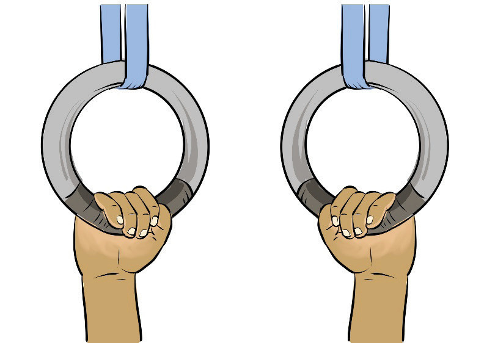

(i)
Hold the ring with your palm facing each other while your thumbs wrap around it, Figure 4.15;
(ii)
Keep your wrists neutral, not flexed or extended; and
(iii)
Engage your shoulder to maintain stability.

Activity 4.15
Go through reliable sources to find out how neutral grip is executed in parallel bars, and uneven bars, then practice it.
False grip
A false grip is a specialised grip used primarily on rings and sometimes on the high bar. It involves positioning the wrist above the rings or bar, allowing gymnasts to transition smoothly into strength moves like muscle-ups, iron crosses, and levers. The following steps will help you practice false grip on a ring:
(i)
Place your hands on the rings with the inside of your wrist resting directly on top, Figure 4.16;
(ii)
Grip firmly while keeping the wrist bent so that your body weight is supported by the wrist, not just the fingers; and
(iii)
Engage the forearms and shoulders to maintain control and avoid slipping.